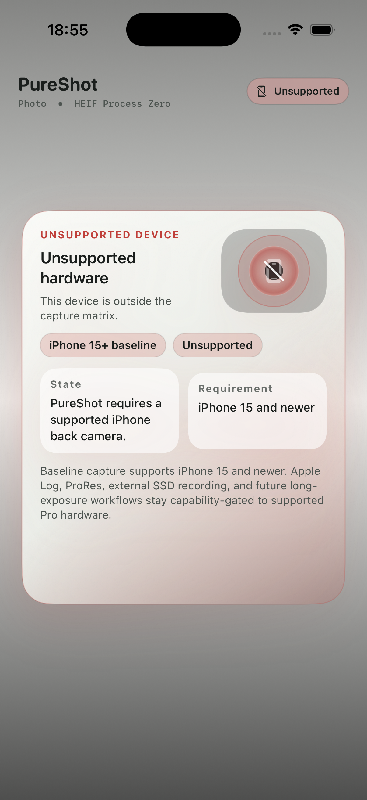
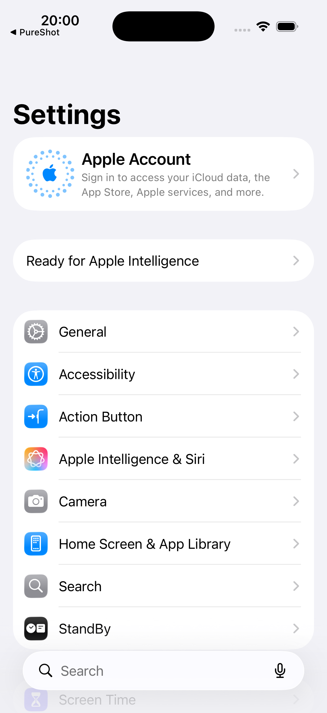
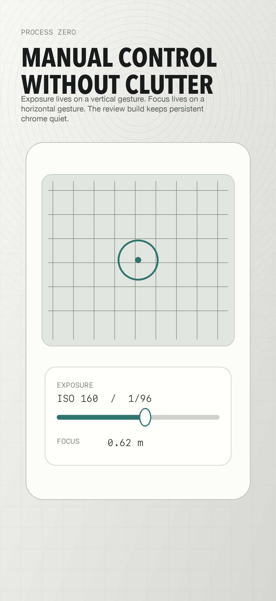
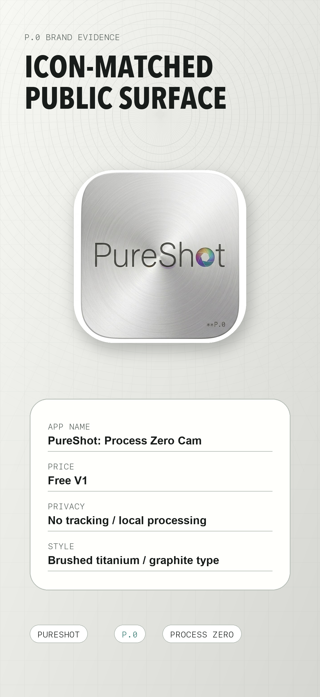

No third-party trackers
PureShot does not include analytics SDKs, advertising SDKs, cookies, tracking pixels, or third-party telemetry in the launch app.
PureShot / Process Zero
PureShot is a fully free professional camera app for iPhone 15 and newer plus M-series iPad models, with RAW-first stills, manual exposure and focus, Apple Log-ready video paths, and local-only media handling.
Support URL
This site is the public support and privacy surface for the free PureShot launch. It documents the implemented permissions, device gating, support path, and manual-control guidance for App Review and early users.
The App Store download link will be added after the free build is approved and live.
Privacy
PureShot does not include analytics SDKs, advertising SDKs, cookies, tracking pixels, or third-party telemetry in the launch app.
Captured photos, videos, and metadata remain on the device unless the user explicitly exports through iOS system flows.
Camera opens the viewfinder. Microphone is requested only for video capture. Photos access is used for user-initiated saves.
Supported Devices
Manual Controls
Use manual exposure to hold ISO and shutter behavior when the active camera exposes those controls.
Manual focus is hardware-gated and available when the active camera supports locked custom lens positioning.
For natural video motion, start with shutter speed near double the frame rate, then adjust intentionally for the scene.
Media Kit




Launch Rule
PureShot V1 does not ship premium, subscriptions, trials, paywalls, tracking, analytics, account creation, backend sync, or cloud upload.